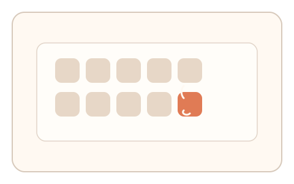
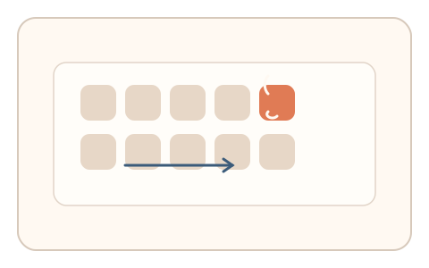

#105
Morphological Analysis - Combination Batches
已扩展
搜索不对称双题
依次完成“Q 中找 O”与“O 中找 Q”，比较搜索路径长度与耗时差异验证真实性。
概念原文
依次完成“Q 中找 O”与“O 中找 Q”，系统比较两段搜索路径长度与耗时差异。任务结构为短序列，信号形态为搜索路径与反应时。
用“搜索不对称性”取代识别难度。
研究背景
视觉搜索存在不对称性，在不同目标/干扰组合中耗时与路径差异明显。对比两题的差异可捕捉人类注意力组织特征。
核心机制
- 呈现“Q 中找 O”的搜索任务。
- 随后呈现“O 中找 Q”的搜索任务。
- 记录两段搜索路径与耗时。
- 比较差异并与基线分布比对。
用户流程
- 步骤 1：用户完成第一题搜索并点击目标。
- 步骤 2：用户完成第二题搜索并点击目标。
- 步骤 3：系统比较路径与耗时差异并判定。
判定信号
路径长度差异
搜索不对称会带来路径复杂度差异。
耗时差异
不对称任务的反应时存在稳定差距。
判定逻辑
路径与耗时差异需符合人类分布区间；过度一致或无差异判异常。
对抗面
- 脚本直接定位目标并瞬时点击
- 重放真实用户的搜索路径
防御与缓解
- 随机化目标位置与阵列密度
- 加入轻微扰动降低直接定位
- 叠加停顿与轨迹信号进行多信号判定
可达性与风险
提供更大目标与低密度模式，对视觉障碍用户提供替代任务。
- 阵列过密导致真实用户耗时过长
- 屏幕尺寸差异影响路径长度
可视化状态

状态 1：Q 中找 O
第一题搜索任务。

状态 2：O 中找 Q
第二题搜索任务。

状态 3：差异判定
比较路径与耗时差异。
参考资料
Visual search
说明视觉搜索与不对称效应。
Feature integration theory
说明目标与干扰特征的搜索差异。